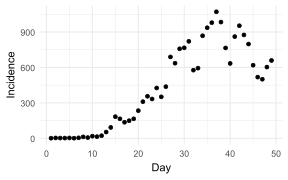
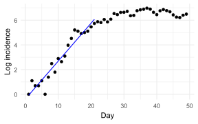

library(ggplot2)
library(patchwork)10 Estimating \(R_0\)
There are 2 approaches to estimating \(R_0\), depending on the type of data available:
Individual-level modelling: used when individual-level data (e.g. contact tracing) is available and is often considered prospective (Pandit, 2020).
Population-level modelling: used when population-level data (e.g. incidence) is available and is often considered retrospective (Pandit, 2020).
The 2 approaches may produce very different numbers because:
- Individual-level calculates the value of \(R_0\), while the population-level calculates the value of a threshold parameter (Breban et al., 2007).
- Individual-level assumes a social contact network with a structure that is different from the all-to-all network assumed by ODE models (Breban et al., 2007).
- Population-level predictions based upon an ODE model that use the \(R_0\) value from contact tracing as a threshold parameter may be inaccurate. Only an epidemic threshold (from population-level modelling) can be used to design control strategies (Breban et al., 2007).
- \(R_0\) value from contact tracing is useful in conjunction with population-level epidemic data to understand the possible transmission mechanisms of the epidemic at the individual-level.
10.1 Contact tracing
This approach is based upon the definition of \(R_0\). Once an individual is diagnosed, his/her contacts are traced and tested. \(R_0\) is then computed by averaging over the number of secondary cases of many diagnosed individuals (Breban et al., 2007).
10.2 Population-level
10.2.1 Exponential growth rate
Step 1. Find an estimate for the mean generation time \(T_g\).
Step 2. Identify the exponential phase of the epidemic curve: the period of which \(\log(\text{incidence})\) is linear.
Step 3. Estimate the growth rate \(r\) for that phase by finding the slope from the linear regression on the \(\log(\text{incidence})\).
Proof
See Section 4 for more details. During the exponential phase, the incidence at time \(t\) is given by:
\[C_t = C_0 e^{rt}\]
Take the natural logarithm:
\[\log C_t = log C_0 + rt\]
Therefore \(r\) is the slope from the linear regression on the \(\log(\text{incidence})\).
Step 4. Given the exponential growth rate \(r\) and the \(T_g\), calculate the basic reproduction number:
- Discrete generation:
\[R_0 = e^{rT_g}\]
- In an SIR model \(T_g = \frac{1}{\gamma}\) so:
\[R_0 \approx 1 + rD = 1 + \frac{r}{\gamma}\]
- In an SEIR model \(T_g = \frac{1}{\gamma} + \frac{1}{\sigma}\) so:
\[R_0 \approx (1 + rD)(1 + rL) = \left( 1 + \frac{r}{\gamma} \right) \left( 1 + \frac{r}{\sigma} \right)\]
In which:
- \(D\) is the mean duration of the infectiousness.
- \(L\) is the mean duration of latency.
10.2.2 Code
Read the data
df <- read.csv("data/covid_uk.csv")
ggplot(df, aes(x = day, y = inc)) +
geom_point() +
labs(x = "Day", y = "Incidence") +
theme_minimal()
Step 1. Find an estimate for the mean generation time \(T_g\). Let say \(T_g = D = 6.6\) for COVID-19.
Step 2. Identify the exponential phase of the epidemic curve: the period of which \(\log(\text{incidence})\) is linear.
df$loginc <- log(df$inc)
p1 <- ggplot(df, aes(x = day, y = inc)) +
geom_point() +
labs(x = NULL, y = "Incidence") +
theme_minimal()
p2 <- ggplot(df, aes(x = day, y = loginc)) +
geom_point() +
labs(x = "Day", y = "Log incidence") +
theme_minimal()
p1 / p2Looks like day 1 to 21 is the exponential phase.
Step 3. Estimate the growth rate \(r\) for that phase by finding the slope from the linear regression on the \(\log(\text{incidence})\).
mod <- lm(loginc ~ day, data = df[1:21,])
pred <- data.frame(day = 1:21, loginc = predict(mod, data = df[1:21,]))
ggplot(df, aes(x = day, y = loginc)) +
geom_point() +
geom_line(data = pred, color = "blue") +
labs(x = "Day", y = "Log incidence") +
theme_minimal()
Look at the linear regression:
summary(mod)
Call:
lm(formula = loginc ~ day, data = df[1:21, ])
Residuals:
Min 1Q Median 3Q Max
-1.45946 -0.32865 -0.05379 0.36148 0.98657
Coefficients:
Estimate Std. Error t value Pr(>|t|)
(Intercept) -0.38285 0.25339 -1.511 0.147
day 0.30705 0.02018 15.216 4.28e-12 ***
---
Signif. codes: 0 '***' 0.001 '**' 0.01 '*' 0.05 '.' 0.1 ' ' 1
Residual standard error: 0.56 on 19 degrees of freedom
Multiple R-squared: 0.9242, Adjusted R-squared: 0.9202
F-statistic: 231.5 on 1 and 19 DF, p-value: 4.28e-12The slope is 0.3070509.
Step 4. Given the exponential growth rate \(r\) and the \(T_g\), calculate the basic reproduction number.
Discrete generation: \(R_0 = e^{rT_g}\)
exp(unname(mod$coefficients[2]) * 6.6)[1] 7.587758SIR model: \(R_0 \approx 1 + rD\)
1 + unname(mod$coefficients[2]) * 6.6[1] 3.026536
Note
\(R_0\) estimates are affected by the mean, variance and shape of the generation time distribution.
- A larger mean \(T_g\) leads to larger \(R_0\).
- For the 2 models with the same mean but different distributions \(T_g\), \(R_0\) estimates are different:
- Discrete generation assumes a uniform \(T_g\).
- SIR model assumes an exponential \(T_g\).
Package R0 provide a ready-to-use function est.R0.EG() to estimate \(R_0\) using exponential growth rate method. We can define different shape of \(T_g\), let try a \(\Gamma(6.6, 4)\):
library(R0)
gt <- generation.time("gamma", c(6.6, 4))
plot(gt)Now compute \(R_0\):
est.R0.EG(df$inc, gt, begin = 1, end = 21)Waiting for profiling to be done...Reproduction number estimate using Exponential Growth method.
R : 3.949484[ 3.716905 , 4.198451 ]10.2.3 Simple compartmental models
Consider a simple closed population SIR model.
\[\begin{align} \frac{dS}{dt} & = -\beta SI \\ \frac{dI}{dt} & = \beta SI - \gamma I\\ \frac{dR}{dt} & = \gamma I \end{align}\]
Focusing on the \(I\) equation:
\[\frac{dI}{dt} = \beta SI - \gamma I = I (\beta S - \gamma)\]
A disease spreads when:
\[\begin{align} \frac{dI}{dt} & > 0 \\ \Leftrightarrow I (\beta S - \gamma) & > 0 \\ \Leftrightarrow \beta S - \gamma & > 0 \\ \Leftrightarrow \beta S & > \gamma \\ \Leftrightarrow \frac{\beta S}{\gamma} & > 1 \end{align}\]
This leads to the definition of \(R_0\). By Definition 1, \(R_0\) is the \(R\) in a fully susceptible population \(S_0\):
\[R_0 = \frac{\beta S_0}{\gamma}\]
Therefore:
- \(R_0 > 1\) meaning that \(\frac{dI}{dt} > 0\), then the disease will spread.
- \(R_0 < 1\) meaning that \(\frac{dI}{dt} < 0\), then no epidemic occurs.
For more complex compartmental models, especially those with more infected compartments, as proposed by (Diekmann et al., 1990) and (Driessche & Watmough, 2002), \(R_0\) can be determined using the next generation matrix (Driessche, 2017).
10.2.4 Next generation matrix
\(R_0\) is the maximum absolute eigenvalue (also called the spectral radius) of the next generation matrix (NGM) (Driessche, 2017).
Consider an SEIR model with equal birth and death rate \(\mu\).
\[\begin{align} \frac{dS}{dt} & = \mu (S + E + I + R) -\beta SI - \mu S \\ \frac{dE}{dt} & = \beta SI - \sigma E - \mu E \\ \frac{dI}{dt} & = \sigma E - \gamma I - \mu I \\ \frac{dR}{dt} & = \gamma I - \mu R \end{align}\]
Step 1. Identify the infected compartments
For our SEIR model, the infected compartments are \(E\) and \(I\).
Step 2. Write the NGM functions
- \(\mathcal{F}_i(x)\): is the rate of appearance of new infections in compartment \(i\) (Driessche, 2017) (caused by contact).
- \(\mathcal{V}_i(x)\): is the rate of other transitions between compartment \(i\) and other infected compartments (Driessche, 2017) (caused by transition between compartments).
For our SEIR model, we would write \(\mathcal{F}\) and \(\mathcal{V}\) as follows:
\[\mathcal{F} = \begin{bmatrix} \beta SI \\ 0 \end{bmatrix}\] \(\mathcal{F}\) is a vector contains of \(\begin{bmatrix} \mathcal{F}_1 \\ \mathcal{F}_2 \end{bmatrix}\):
- \(\mathcal{F}_1 = \beta SI\): the rate of new infections (caused by contact) in compartment \(E\).
- \(\mathcal{F}_2 = 0\): as there is no new infections (caused by contact) in compartment \(I\).
\[\mathcal{V} = \begin{bmatrix} \sigma E + \mu E \\ - \sigma E + \gamma I + \mu I \end{bmatrix}\]
\(\mathcal{V}\) is a vector contains of \(\begin{bmatrix} \mathcal{V}_1 \\ \mathcal{V}_2 \end{bmatrix}\):
- \(\mathcal{V}_1 = \sigma E + \mu E\): is the rate of other transitions to and from compartment \(E\).
- \(\mathcal{V}_2 = - \sigma E + \gamma I + \mu I\): is the rate of other transitions to and from compartment \(I\).
\(\mathcal{F}\) and \(\mathcal{V}\) are written such that:
\[\frac{dx}{dt} = \mathcal{F} - \mathcal{V}\]
Here we have:
\[\frac{dE}{dt} = \mathcal{F}_1 - \mathcal{V}_1 = \beta SI - (\sigma E + \mu E)\]
\[\frac{dI}{dt} = \mathcal{F}_2 - \mathcal{V}_2 = 0 - (- \sigma E + \gamma I + \mu I)\]
Step 3. Find the Jacobian matrix
Jacobian matrix \(F\) for \(\mathcal{F}\), and \(V\) for \(\mathcal{V}\). Jacobian matrix is a matrix contain all partial derivatives of a vector function.
\[\begin{align} F & = \begin{bmatrix} \frac{\partial \mathcal{F}_1}{\partial E} & \frac{\partial \mathcal{F}_1}{\partial I} \\ \frac{\partial \mathcal{F}_2}{\partial E} & \frac{\partial \mathcal{F}_2}{\partial I} \end{bmatrix} \\ & = \begin{bmatrix} \frac{\partial [\beta SI]}{\partial E} & \frac{\partial [\beta SI]}{\partial I} \\ \frac{\partial [0]}{\partial E} & \frac{\partial [0]}{\partial I} \end{bmatrix} \\ & = \begin{bmatrix} 0 & \beta S \\ 0 & 0 \end{bmatrix} \end{align}\]
In which:
- \(\frac{\partial [\beta SI]}{\partial E} = 0\): because there is no \(E\) in \(\beta SI\).
- \(\frac{\partial [\beta SI]}{\partial I} = \beta S\).
\[\begin{align} V & = \begin{bmatrix} \frac{\partial \mathcal{V}_1}{\partial E} & \frac{\partial \mathcal{V}_1}{\partial I} \\ \frac{\partial \mathcal{V}_2}{\partial E} & \frac{\partial \mathcal{V}_2}{\partial I} \end{bmatrix} \\ & = \begin{bmatrix} \frac{\partial [\sigma E + \mu E]}{\partial E} & \frac{\partial [\sigma E + \mu E]}{\partial I} \\ \frac{\partial [- \sigma E + \gamma I + \mu I]}{\partial E} & \frac{\partial [- \sigma E + \gamma I + \mu I]}{\partial I} \end{bmatrix} \\ & = \begin{bmatrix} \sigma + \mu & 0 \\ - \sigma & \gamma + \mu \end{bmatrix} \end{align}\]
Step 4. Compute the NGM
Use Definition A.6 to compute inverse matrix \(V^{-1}\):
\[\begin{align} V^{-1} & = \frac{1}{(\sigma + \mu)(\gamma + \mu)} \begin{bmatrix} \gamma + \mu & - 0 \\ - \sigma & \sigma + \mu \end{bmatrix} \\& = \begin{bmatrix} \frac{1}{\sigma + \mu} & 0 \\ \frac{\sigma}{(\sigma + \mu)(\gamma + \mu)} & \frac{1}{\gamma + \mu} \end{bmatrix} \end{align}\]
\[\begin{align} K & = FV^{-1} \\ & = \begin{bmatrix} 0 & \beta S \\ 0 & 0 \end{bmatrix} \begin{bmatrix} \frac{1}{\sigma + \mu} & 0 \\ \frac{\sigma}{(\sigma + \mu)(\gamma + \mu)} & \frac{1}{\gamma + \mu} \end{bmatrix} \\ & = \begin{bmatrix} \frac{\beta S \sigma}{(\sigma + \mu)(\gamma + \mu)} & \frac{\beta S}{\gamma + \mu} \\ 0 & 0 \end{bmatrix} \end{align}\]
What is a next generation matrix?
Source: quantpies video.
A population consists of two groups: young and old.
- A young person on average infects 3 young and 2 old: \(\begin{bmatrix} 3 \\ 2 \end{bmatrix}\).
- An old person on average infects 1 young and 2 old: \(\begin{bmatrix} 1 \\ 2 \end{bmatrix}\).
Each group becomes a column in the next generation matrix (NGM):
\[\text{NGM} = \begin{bmatrix} 3 & 1 \\ 2 & 2 \end{bmatrix}\]
\(R_0\) is the root of equation:
\[\begin{align} \begin{bmatrix} 3 - \lambda & 1 \\ 2 & 2 - \lambda \end{bmatrix} & = 0 \\ \Leftrightarrow (3 - \lambda) \times (2 - \lambda) - 2 \times 1 & = 0 \\ \Leftrightarrow \lambda^2 - 5 \lambda + 6 - 2 & = 0 \\ \Leftrightarrow \lambda^2 - 5 \lambda + 4 & = 0 \end{align}\]
There are two roots \(\lambda = 4\) and \(\lambda = 1\), for an outbreak to occur \(R_0 > 1\), so here \(R_0 = 4\).
Step 5. Compute \(R_0\)
\(R_0\) is the eigenvalues of the NGM.
\[\begin{align} det(K - \lambda) & = \begin{bmatrix} \frac{\beta S \sigma}{(\sigma + \mu)(\gamma + \mu)} - \lambda & \frac{\beta S}{\gamma + \mu} \\ 0 & 0 - \lambda \end{bmatrix} \\ & = [\frac{\beta S \sigma}{(\sigma + \mu)(\gamma + \mu)} - \lambda][0 - \lambda] \end{align}\]
\[R_0 = \frac{\beta S \sigma}{(\sigma + \mu)(\gamma + \mu)}\]
Use NGM to compute \(R_0\) for SIR model
Consider a simple closed population SIR model.
\[\begin{align} \frac{dS}{dt} & = -\beta SI \\ \frac{dI}{dt} & = \beta SI - \gamma I\\ \frac{dR}{dt} & = \gamma I \end{align}\]
Step 1. Identify the infected compartments
For our SIR model, the infected compartment is \(I\).
Step 2. Write the NGM functions
\[\mathcal{F} = \beta SI\]
\[\mathcal{V} = \gamma I\]
Such that we have:
\[\frac{dI}{dt} = \mathcal{F} - \mathcal{V} = \beta SI - \gamma I\]
Step 3. Find the Jacobian matrix
\[F = \frac{\partial \mathcal{F}}{\partial I} = \frac{\partial [\beta SI]}{\partial I} = \beta S\]
\[V = \frac{\partial \mathcal{V}}{\partial I} = \frac{\partial [\gamma I]}{\partial I} = \gamma\]
Step 4 and 5. Compute the NGM and \(R_0\)
\[V^{-1} = \gamma^{-1} = \frac{1}{\gamma}\]
\[K = FV^{-1} = \frac{\beta S}{\gamma}\]
Here we also have \(R_0\).
\[R_0 = \frac{\beta S}{\gamma}\]
10.3 Epidemic final size
If there were no interventions or changes in behavior, the proportion of the population infected during the entire course of an epidemic would be approximately the non-zero solution of the equation:
$$$$